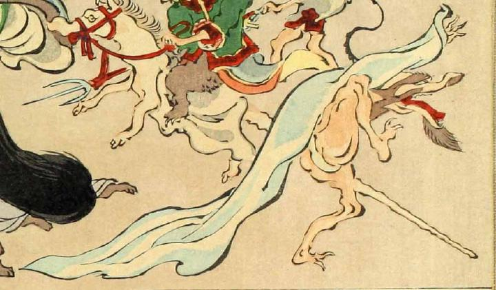

狼のように口が長くつき出た化物。顎ひげと眉毛を長く伸ばしており、白い布をかぶっている。前方に尻尾のようなものを長く伸ばし、右脚を高くあげている。白い褌を身につけている。
著作者：洒落斎芳幾（歌川芳幾）／出典：親書誌：U426_nichibunken_0075：滑稽倭日史記；コッケイヤマトシキ／日付：2007／資源識別子：U426_nichibunken_0075_0037_0000
Copyright (c)2010- International Research Center for Japanese Studies, Kyoto, Japan. All rights reserved.